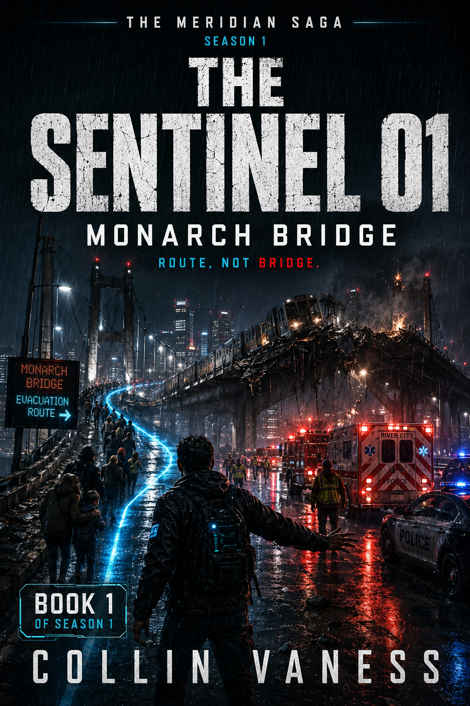

Near-Future Thriller · 16 Books · Season 1
The Meridian Saga
SEASON 1 · SIX CHARACTERS · SIXTEEN BOOKS
Six characters. Sixteen books. One city — and the seven minutes that change everything.
Get release news →
About the saga
Meridian is a city the way any city is a city — until it isn’t. The Meridian Saga follows the first public fractures in one such place: a metropolis learning, slowly and then all at once, that disaster, memory, infrastructure, and power do not always obey the records built to contain them.
Season One is sixteen books. Six lead characters take the wheel across the season — some get two volumes, some get three. Each book stands on its own as a complete operation, a complete crisis, a complete reckoning. Together they assemble a single mosaic season of a city under strain — building toward seven minutes in November when the records the city keeps stop matching the records the city remembers.
“Route is the word for a promise that has not become safety yet.”
— The Sentinel 01: Monarch Bridge, epigraph
The Six Lead Characters
Each arc carries a distinct register and a distinct piece of the city. None of them sees the whole picture.
- The Sentinel
- Nathan Cole — the man who decides the smaller answer first. Books 1, 7, 15.
- Vesper
- The room that was there yesterday and is not there now. Books 2, 8, 14.
- Helix
- What the body remembers when the records are corrupted. Books 3, 9, 16.
- The Architect
- The geometry of crisis. Control, not chaos. Books 4 & 10.
- The Red Queen
- The price of shelter, when shelter is the thing being weaponised. Books 5 & 11.
- Mother Null
- The quiet room at the center of everything that screams. Books 6 & 12.
Book 13 steps outside the character arcs to the universe itself — The Meridian Universe: The Seven-Minute War. The seven minutes the city will spend the rest of the season living inside.
The Story Villains
Meridian’s antagonists are not, in the main, people. They are the institutional forces of a city whose records are designed to outlast the truth they claim to keep.
- Dominion
- The civic operator. Runs the Northstar Line, the records the Northstar Line generates, and the bureaucratic weather that makes delay feel like fate. The default opposition in every book.
- The Civic Crown
- Meridian’s municipal apparatus. Where public hearings are scheduled, where records are filed, where the city’s official memory is curated. The Civic Review Commission sits inside it.
- The Archive
- The classified records sub-level beneath the Civic Crown. Where intake forms go to stop having names. Where Vesper has to operate when the city would rather she didn’t.
- The Fear Model
- Not a person. A doctrine. The Architect’s premise that civic control is best maintained by managing what a city fears, when, and for how long. From Book 4 forward, this is the season’s organising thesis.
- The Records System
- The active mechanism by which Meridian forgets. Forms are filed. Names are redacted. Routes become roads. Helix’s permanent counter-force across Books 3, 9, and 16.
- The Seven-Minute Window
- The season’s gravitational antagonist. Civic Crown station, Northstar Line, 17:35–17:42 on a Thursday in November. After the Seven, no force in the city is what it was before.
Season One — The Sixteen Books

Monarch Bridge
Nathan Cole holds one route long enough for people to survive. When the official record is filed, the public story is already incomplete. The opening volume of the season — and the first time Meridian learns the difference between a route and a promise.

The Missing Room
A room that was there yesterday is not there today. The records say it never was. Vesper has to decide whether to trust the building or the people who said they remembered being inside it.

Soft Tissue Gods
The body keeps a parallel record. When the city’s records are corrupted, Helix becomes the only authority left — and the only one nobody asked for permission.

Crisis Geometry
Every emergency has a shape. Every shape has an author. The Architect introduces the most chilling premise of the season: control as a design discipline, not a failure.

The Price of Shelter
Shelter is not free. It never was. The Red Queen runs the math the city refused to put on paper — and discovers what the bill actually says.

The Quiet Room
At the center of every alarmed system is a room that doesn’t make a sound. Mother Null is the woman who walks into that room without a clearance and decides what she finds.

The Weight of Falling
Nathan Cole returns. The route he held in Book One has cost him something he didn’t know he was paying for. The smaller answer doesn’t work any more.

Names Under Northstar
Some names were never on the list, but were always in the room. Vesper finds the second record — and learns who has been keeping it.

The Skin That Remembered
The body knows what the city forgot. Helix follows the trace back through the population — and finds, finally, the shape the Architect was drawing.

The Fear Model
Control, not chaos. The Architect’s model meets the city it was built for. The midpoint of Season One — and the last quiet hour before the Seven.

Red Route
Save the witness. Burn the road. The Red Queen runs the route that doesn’t appear in any plan. The road has to be deniable fast enough to stay a route, and the witness has to stay a person long enough to be saved.

A Mercy Without Memory
Relief first. Cost second. Explanation never. Mother Null walks into a community care annex with a clock running down. The witness’s memory is the only thing the city is still afraid of.
The Seven-Minute War
Book 13 is the season’s pivot. For seven minutes in November, the Northstar Line stops working in a way that nothing in the city’s records can hold. The last three volumes of Season One are written in the shadow of that seven minutes.

The Seven-Minute War
Denial ends. Explanation does not. The book that steps outside any one character’s vantage and gives Meridian itself the wheel. Civic Crown station. Platform 0. Northstar Line, 17:35–17:42. After this, the city is not what it was at 17:34.

The Seven Minutes Beneath
Preserve the proof. Protect the name. The seven minutes are over. Vesper is in the archive sub-level the city would prefer didn’t have a name. The intake forms don’t end where the city says they end.

After the Seven
Answer the city. Protect the names. Nathan Cole faces the Civic Review Commission. The hearing is public. The names on the list are not. The Sentinel’s third volume — and the first time a route becomes a record.

Residue
The closing volume of Season One. The body keeps a record the city refuses to file. Helix picks up the work after the Seven — and finds what the records were designed to forget.
For readers of
William Gibson’s Blue Ant trilogy, Min Jin Lee’s multi-POV Pachinko, David Mitchell’s Ghostwritten mosaic, the long-arc city work of Richard Price (Lush Life, Clockers), and the cyber-adjacent realism of Cory Doctorow.